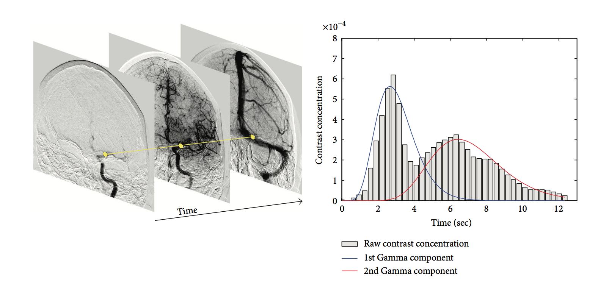

2.5
A challenging aspect of the estimation of perfusion parameters is when there is overlap of the vessels (see figure below). We can solve this problem by representing the concentration over time with a Gamma-mixture distribution that is created by using an EM algorithm.

2.5.1 Gamma-Variate Fitting
The density function $\gamma_{\alpha, \beta}$ can be written as:
$$ \gamma_{\alpha, \beta} (x) = \begin{cases}
\frac{\beta^{\alpha}}{\Gamma(\alpha)}\text{exp}^{-(x-\mu)\beta}(x-\mu)^{\alpha - 1}, & \text{if}\ x - \mu \ge \Delta_{min} \\
0, & \text{otherwise}
\end{cases}
$$ where $\alpha$, $\beta$, and $\mu$ are the shape, scale, and location parameters. We define the Gamma function $\Gamma(\alpha)$ as $$\Gamma(\alpha) = \int_0^{\infty}t^{\alpha-1} \text{exp}^{-t}dt$$ We like the Gamma distribution because of it can accomodate different concentration-time curves.
2.5.2 Mixture of Gamma-Variate Distribution
Our mixture equation is defined as the following: $$\mathscr{M}(x, \Theta) = \sum^K_{j=1}\tau_j \gamma_{\alpha_j, \beta_j} (x)$$ where $\gamma_{\alpha_j, \beta_j}(x)$ is the Gamma-variate distribution of the $j^{th}$ component.
2.5.3 Parameter Estimation
We use good-old MLE to estimate our parameter $\Theta$. Our log-likelihood is: $$\mathscr{L}(\Theta) = \sum^N_{i=0}\text{log}\mathscr{M}(x_i, \Theta)$$ and we use Expectation-Maximization (EM) algorithm to estimate our param.
Expectation Step: We calculate expected value $Q(\Theta, \Theta^m)$ of the log-likelihood given current parameteres $\Theta^m$ and $$Q(\Theta, \Theta^m) = \sum^N_{i=1}\sum^K_{j=1} z_{ij}^m \text{log} (\tau_j) + C$$ where $$z_{ij}^m = \frac{\tau_{j}^m \gamma_j(x_i\alpha_j^m, \beta_j^m)}{\mathscr{M}(x_i, \Theta^m)}$$
Maximization Step: We maximize $Q(\Theta, \Theta^m)$ w.r.t. $\Theta$ using numerical optimization (Newton's Method, Gradient Descent). $$\Theta^{m+1} = \mathop{\arg\,\max}\limits_{\Theta} Q(\Theta, \Theta^m)$$ We execute this iterative procedure until the convergence criterion $| \Theta^{m+1} - \Theta^m | < \tau_{EM}$ is satisfied.